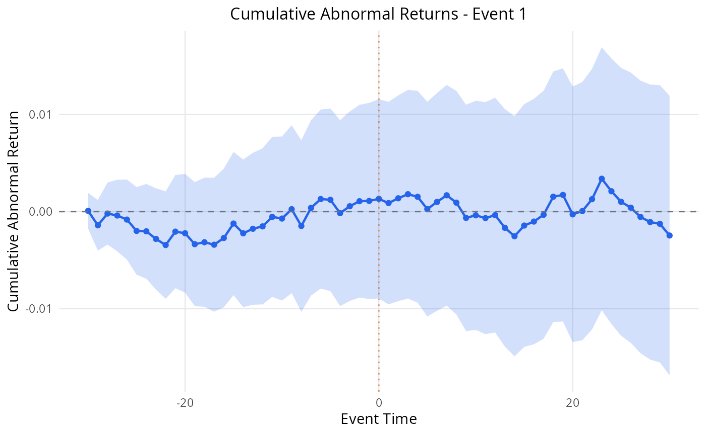

Methods: Intraday Event Studies
Source:vignettes/articles/methods-intraday.Rmd
methods-intraday.Rmd1. Title & Abstract
This article covers intraday event studies —
abnormal-return analysis at minute (or finer) frequency rather than
daily. Many events (earnings releases, regulatory announcements,
central-bank communications) resolve within minutes, and daily data
averages that signal away. EventStudy’s
IntradayEventStudyTask runs the same market-model machinery
on POSIXct-timestamped high-frequency bars. Here it is estimated live on
an inline synthetic one-minute session.
2. When to Use This Method
Use an intraday study when the event’s effect is expected to materialise and possibly decay within a trading day, and you have timestamped bar or tick data. The frequency lets you locate the exact minute of price impact and measure how quickly the market absorbs the news (Barclay and Warner 1993) — detail that a daily study cannot resolve.
3. Intuition
The idea is identical to the daily market model, only the clock ticks faster. Fit the firm’s minute returns on the market’s minute returns over a pre-event estimation window, then measure minute-by-minute abnormal returns around the event timestamp. Cumulating them across the intraday event window traces the price-impact path in real time.
4. Model & Null Hypothesis
At intraday frequency \tau, the abnormal return is the market-model residual computed by the same shared engine used for daily studies:
AR_{i,\tau} = r_{i,\tau} - \hat{\alpha}_i - \hat{\beta}_i\, r_{m,\tau}.
The null hypothesis is H_0: \mathbb{E}[AR_{i,\tau}] = 0 across the intraday event window — no abnormal minute-level return around the event.
5. Assumptions
-
Timestamp alignment: firm and reference bars share
a common time grid; timestamps must be
POSIXct. - Stable intraday beta estimated in the pre-event window.
- Microstructure caveats: bid-ask bounce and thin trading inflate high-frequency noise; keep the bar size coarse enough to be meaningful.
- Clean estimation window free of overlapping intraday events.
6. Worked Example
We construct an inline synthetic intraday dataset in base R /
tibble with an explicit local set.seed(42) for
byte-stable output. Column names match the existing
intraday-event-study vignette: firm and reference tables
carry symbol, timestamp (POSIXct),
price; the request carries event_id,
group, firm_symbol, index_symbol,
event_timestamp, and minute windows.
library(EventStudy)
library(tibble)
set.seed(42)
ts <- seq(as.POSIXct("2023-06-01 09:30:00", tz = "UTC"),
by = 60, length.out = 300) # 300 one-minute bars
firm_data <- tibble(
symbol = "FIRM_A",
timestamp = ts, # MUST be POSIXct or the constructor stops
price = 100 * cumprod(1 + rnorm(300, 0, 0.001))
)
index_data <- tibble(
symbol = "INDEX_1",
timestamp = ts,
price = 1000 * cumprod(1 + rnorm(300, 0, 0.0008))
)
request <- tibble(
event_id = 1L,
group = "Intraday",
firm_symbol = "FIRM_A",
index_symbol = "INDEX_1",
event_timestamp = as.POSIXct("2023-06-01 12:30:00", tz = "UTC"),
event_window_start = -30L,
event_window_end = 30L,
shift_estimation_window = -31L,
estimation_window_length = 120L
)
task <- IntradayEventStudyTask$new(firm_data, index_data, request)
params <- ParameterSet$new()
task <- prepare_intraday_event_study(task, params)
task <- fit_model(task, params)
task <- calculate_statistics(task, params)7. Rendered Table
knitr::kable(
head(tidy.EventStudyTask(task, type = "car"), 10),
caption = "Intraday cumulative abnormal returns around the event minute (first 10 offsets)."
)| event_id | group | firm_symbol | term | estimate | std.error | statistic | p.value |
|---|---|---|---|---|---|---|---|
| 1 | Intraday | FIRM_A | [-30,-30] | 0.0001 | 0.0009 | 0.0821 | 0.9347 |
| 1 | Intraday | FIRM_A | [-30,-29] | -0.0014 | 0.0013 | -1.0600 | 0.2913 |
| 1 | Intraday | FIRM_A | [-30,-28] | -0.0002 | 0.0016 | -0.1220 | 0.9031 |
| 1 | Intraday | FIRM_A | [-30,-27] | -0.0004 | 0.0019 | -0.2126 | 0.8320 |
| 1 | Intraday | FIRM_A | [-30,-26] | -0.0008 | 0.0021 | -0.3904 | 0.6970 |
| 1 | Intraday | FIRM_A | [-30,-25] | -0.0020 | 0.0023 | -0.8643 | 0.3892 |
| 1 | Intraday | FIRM_A | [-30,-24] | -0.0020 | 0.0025 | -0.8151 | 0.4166 |
| 1 | Intraday | FIRM_A | [-30,-23] | -0.0028 | 0.0027 | -1.0573 | 0.2925 |
| 1 | Intraday | FIRM_A | [-30,-22] | -0.0034 | 0.0028 | -1.2204 | 0.2247 |
| 1 | Intraday | FIRM_A | [-30,-21] | -0.0021 | 0.0030 | -0.6937 | 0.4892 |
8. Rendered Plot
plot_event_study(task)
Intraday abnormal-return path around the event timestamp.
9. Interpretation
The table in §7 reports minute-level cumulative abnormal returns relative to the event timestamp; the corresponding t-statistics flag which minutes carry a significant response. The plot in §8 shows the intraday path — a sharp break at offset zero followed by a plateau is the signature of near-instant price discovery, whereas a gradual drift suggests slower information diffusion. Because the underlying abnormal-return engine (§4) is shared with the daily pipeline, every downstream statistic and plot behaves identically; only the clock changes.